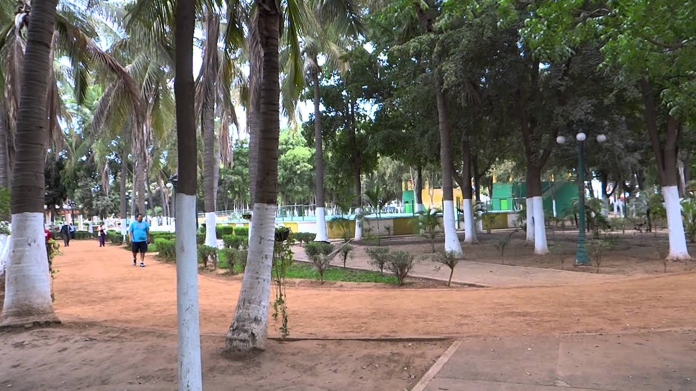

La raíz del problema surge debido al uso excesivo de dispositivos electrónicos como son el celular, computadora o tableta, entre jóvenes y adultos durante su tiempo libre. Aún teniendo la opción de realizar otras actividades dentro de su ciudad.
SOLUCIÓN
Nuestra solución se centra en crear un contacto directo con la socieadad mediante una página web, donde podamos mostrar diversos lugares y actividades que los jovenes podrán realizar en sus tiempos libres y así disminuir el uso excesivo de sus dispositivos.
Juego
Interactua con nuestro juego para poder conocer más lugares en este nuestro país México.
Para jugar solo crea una cuenta, y luego selecciona el lugar el cual quieres visitar, pero si y tienes cuenta solo inicia sesión.
(Preferiblemente usar en México)
Culiacán
Lugar: Parque Las Riberas
Actividad: Tirolesa o paseo en bicicleta
Mazatlán
Lugar: Malecón de Mazatlán
Actividad: Paseo por malecón y playa
Los Mochis
Lugar: Museo Interactivo Trapiche
Actividad: Realizar diversas dinámicas que el museo ofrece
Ahome
Lugar: Playa ¨El Maviri¨
Actividad: Paseo en Kayak por la playa
Angostura
Lugar: Playa ¨La Reforma¨
Actividad: Renta de barcos para disfrutar de la playa
Badiraguato
Lugar: Surutato
Actividad: Renta de motos o razers por el bosque
Concordia
Lugar: Parque Acuatico Salto Grande
Actividad: Nadar en las diferentes albercas con las que cuenta este parque
Cosalá
Lugar: Cascada ¨Vado Hondo¨
Actividad: Nadar dentro de esta misma cascada
Choix
Lugar: Pueblo señorial
Actividad: Paseo en tirolesa
El Fuerte
Lugar: Museo ¨El Fuerte¨
Actividad: Renta de lanchas para pesca
Elota
Lugar: Playa Ceuta
Actividad: Liberar tortugas marinas
Escuinapa
Lugar: Playa ¨Las Lupitas¨
Actividad: Paseo en la playa
Guasave
Lugar: Parque ¨Hernando Villafañe¨
Actividad: Bañarse o jugar en sus fuentes

Mocorito
Lugar: Templo de la Purísima Concepción
Actividad: Ver y disfrutar de su arquitectura
Navolato
Lugar: Playa ¨Nuevo Altata¨
Actividad: Paseo por malecón y visita a puestos de comida